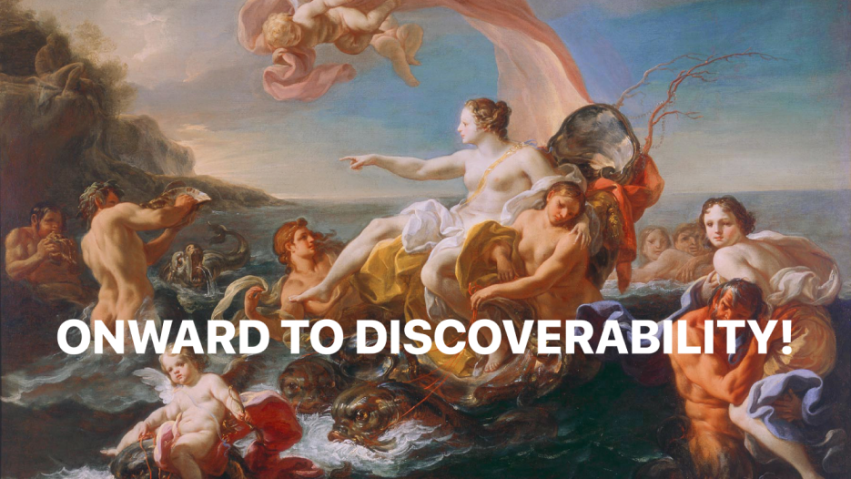
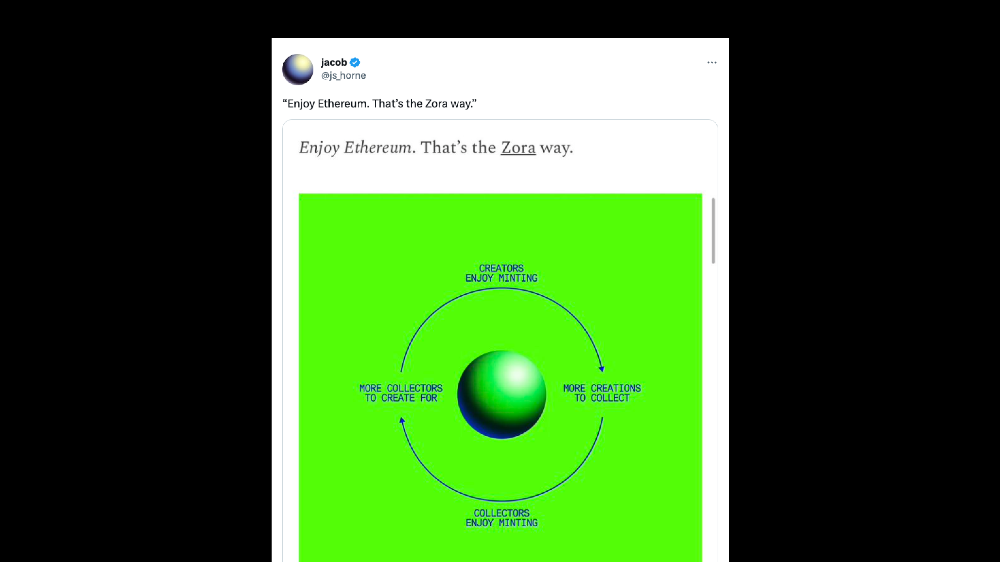
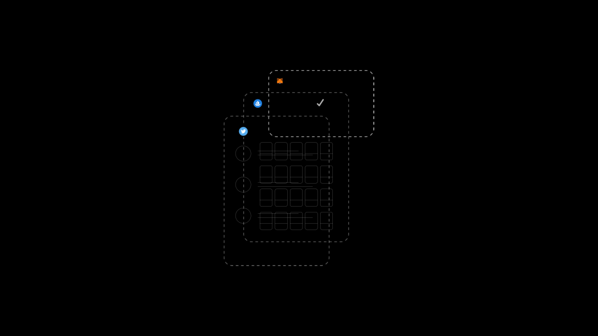
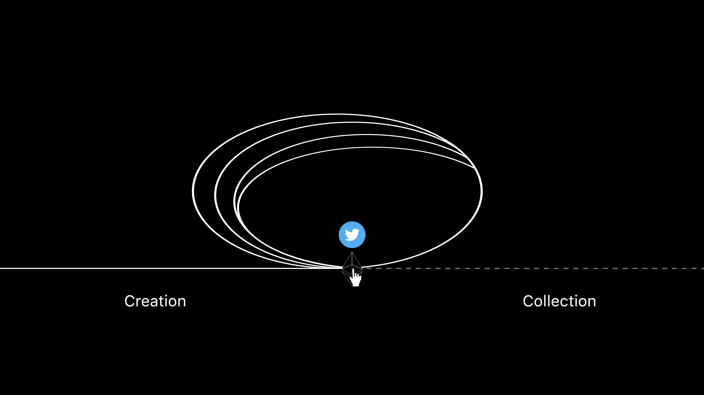

An essay so anecdotal is may be universal
Life is positive sum whether you believe it or not.
Thus, the next logical step as far as I can tell, is how to get such a truth to manifest beyond the friction of a determi-nihilist stratafigures (term coined here).
I want to figure out how we radically accelerate discoverability in the onchain space. Selfishly for myself of course, but "a rising [discoverability mechanism] lifts all [onchain creative economies].
Anecdotes
I had a few calls last week after 2.5 yrs with my head down stupidly failing upwards. In both calls I got the same motif as in previous networking scenarios; I’m underrated.
This is as objective as my subjective-consciousness can get here. People collect my art. They tell me I’m underrated. People respond to my ideas. They tell me I’m early. Founders message me in DMs for feedback. They tell me they’re in agreeance.
It took time, but I now realize I should not be taking this dynamic as laurels to rest on. I look around and know this has to be happening to a ton of hard working creators in the space as well. Whether that’s music, literature, gaming, defi, devtools, whatever; discoverability is truly like finding a needle in a haystack.
The large follower accounts are not ubiquitously ‘overrated’, there is just an undeniable pattern of finding a gem of an account with 1.5-6k followers, struggling to get any traction on ideas/work that would flourish on those big accounts.
Bottlenecks
First off, Twitter is the biggest double-edged sword of this art era.
- on one hand you have a community square to scale onchain together
- on the other, you are beholden to arbitrary algorithmic code-sets and the patterns that get set for discoverability on top of them
With sub-1M collectors in the space we should all look like Matthew McConaughey at the restaurant in Wolf of Wall Street; rookie numbers, we need to get them up.
The more wallets I can introduce my work into the better, obviously at the surface level but I am thinking more of the 2030 time-space context.
The friction points of accomplishing that currently have me spending out of pocket to do so (having to take breaks to recoup funds before continuing). It also requires collectors to leave the app.
Here’s what an ‘underrated’ creator typically must do to get their work in a new anon wallet:
- Mint the work and put it up for sale
- Soft shill on Twitter
- Get recognition on the work through step 2 or repeat
- Begin dialogue with the recognizing party (again soft shilling)
- Convince recognizing party to click a link (iykyk)
- Convince recognizing party to part with their ETH
This doesn’t even account for turning their would-be-new collector into a curator of their work. Part of the ascension rocket household names catch are the ‘hype’ effect of a big name broadcasting their acquisition. This is more so evidence of the domino effect of discoverability than any critique against ‘hype dynamics’.
Brainstorm
I wrote an article on ‘curation daos’ last year. After some more time I feel that it may be the best bet with our current structure.
@Farcaster are doing some really cool things with embedded mints, but invite access and limited adoption do not present market-ready discoverability at this moment.
Alliances like @BurritoDAO, @Accelerateart, and @TungstenDAO are doing some really cool things too. They are more focused on aesthetic, irl location, or demo specific contexts from what I’ve gathered.
I wonder if there is a way to create a DAO in which an auction is put up for any artist that submits work to the wallet. Their social profiles, bio, wallet address presented with their work at time of auction.
The outline of the idea is:
- submission windows to fill the DAO wallet
- min bid in accordance with other nouns fork (.0001 territory)
- 50% of proceeds go to a DAO wallet to develop the DAO
- 50% of proceeds go to the artist of the work
- for every piece an artist sells through the dao they get a corresponding vote
- for every piece a collector gets through the dao they get a corresponding vote
Friction points
Immediately I see a curation problem at some point that would need addressing. The goal is not necessarily anarchy.
It would be naive to say that all discoverability deficits are due to external factors. There is a natural law of ‘markets value what markets value’.
What I am positing is for the group of ‘underrated-ascending’ creators. Obviously because I consider myself one, and also because I know there is a positive sum network effect to fixing this problem.
Any peers should feel free to reach out to me in DMs if this idea interests you.